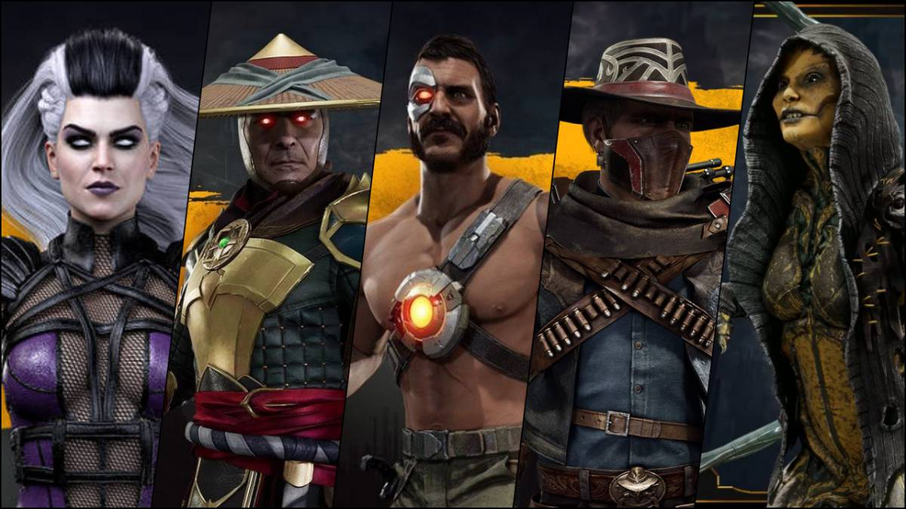

Más Información
Mortal Kombat 11 (comúnmente abreviado como MK11) es un videojuego de lucha desarrollado por NetherRealm Studios y publicado por Warner Bros. Interactive Entertainment. Se ejecuta en una versión muy modificada de Unreal Engine 3, es la undécima entrega principal de la serie Mortal Kombat y una secuela de 2015 Mortal Kombat X. Anunciado en The Game Awards 2018, el juego se lanzó en Norteamérica y Europa el 23 de abril de 2019 para Microsoft Windows, Nintendo Switch, PlayStation 4 y Xbox One.
¡Personajes Nuevos!
Todavía no estás seguro? Mira la opinión de otros compradores:
@USUARIO1: Sinceramente, ¡el MEJOR juego de lucha que he jugado en años! Después de ver un juego entre mi hermano y algunos amigos, ¡quedé asombrado! alucinante! ¡Así que compré la Ultimate Edition y maldita sea, es buena! Ahora que he jugado a otros luchadores desde Injustice 2 hasta Tekken7 y streetfighter, tengo algo de experiencia en el género y puedo decir honestamente que MK11 pisotea cualquier juego de lucha que haya jugado. Desde los gráficos hasta lo cercano y personal que se siente el juego y ¡OH, esas FATALIDADES!
@USUARIO2: Creo que es el mejor juego de MK de la serie, desde la historia hasta la cripta y los personajes. El sistema de variación personalizado es bastante bueno, porque puedes personalizar el diseño de tus personajes y puedes agregar diferentes movimientos para cada variación. El krypt es increíble, juegas como un personaje aleatorio y desbloqueas elementos y engranajes para cada personaje, también resuelves acertijos e incluso te encuentras con personajes npc como Reptile y Ermac. y hombre, las muertes son las más brutales de toda la franquicia.